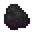
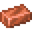
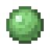

Crafting and automation: pages
Crafting and automation
Fabrication materials
The fabrication chain - silicon from sand, Ferrite, Copper Foil, Fiberglass, Solder Paste, Circuit Substrate - and the components made from it.
On this page
Almost everything in the mod is built from a handful of intermediate materials. All of the first ones come from vanilla resources: sand, iron, copper, redstone, glass, string, slime balls and coal. Make a stack of each early on; you'll use them constantly.
The chain at a glance#
| Material | From | Mainly for |
|---|---|---|
| Sand in a blast furnace | Silica Blend | |
| 4 Silica + coal or charcoal | Silicon Boule | |
| Silica Blend in a furnace | Silicon Wafers | |
| A Silicon Boule on a stonecutter: 4 wafers | Logic Die, 8K Storage Die, Doped Silicon | |
| A Silicon Wafer + redstone | Memory and Processor Dies, the Memory Photomask | |
| An iron ingot + redstone | Nearly everything: photomasks, drives, heatsinks, devices | |
| A copper ingot on a stonecutter: 2 foil | Circuit Substrate, Tantalum Capacitors, Fluid drives | |
| Glass + 2 string: 2 Fiberglass | Circuit Substrate, Fiber Cable | |
| A copper ingot + a slime ball: 2 paste | Circuit Substrate, Tantalum Capacitors, dies | |
| Fiberglass + Copper Foil + Solder Paste | Nearly every device | |
| 5 copper ingots + 1 Ferrite | Scheduler Core, Thread Unit, servers | |
| A Tantalum Ingot + Copper Foil + Solder Paste: 2 capacitors | Energy drives, Gateway, ports, Capacitor Bank, UPS | |
| Fiberglass, a Logic Die, glass, Copper Foil, a Gallium Ingot | Fiber links, SAN uplinks, Relay Antennas | |
| A Gallium Ingot, a Logic Die, Copper Foil, Circuit Substrate | Wireless devices |
Silicon#
Silicon takes four steps and three kinds of block: blast sand into Silica, mix four Silica with coal into Silica Blend, smelt that into a Silicon Boule, and cut the boule on a stonecutter into four Silicon Wafers.

encodedlogistics:silica_blend
encodedlogistics:silicon_wafer_from_stonecutting
Wafers go into the Lithography Press for Logic Dies and 8K Storage Dies. For Memory and Processor Dies, dope them first:
encodedlogistics:doped_silicon
Ferrite#
Ferrite is an iron ingot and a redstone dust, crafted together. It goes into almost every recipe in the mod, so it's worth automating early. Nine make a  Block of Ferrite for storage (see Ores and metals).
Block of Ferrite for storage (see Ores and metals).
encodedlogistics:ferrite
encodedlogistics:ferrite_from_ferrite_block
Circuit Substrate#
Circuit Substrate is the board every device is built on. It takes Fiberglass, Copper Foil and Solder Paste, so you need a stonecutter for the foil and slime balls for the paste.
encodedlogistics:fiberglass


encodedlogistics:solder_paste
encodedlogistics:circuit_substrate
Components#
Three more parts are made from the metals:
- The Heatsink (copper and Ferrite) cools the autocrafting and server hardware.
- Tantalum Capacitors need tantalum. They come two to a craft.
- The Optical Transceiver and Radio Module need gallium. Transceivers are for fiber links (see Optical networking), a SAN's uplinks and Relay Antennas' range; Radio Modules are for wireless gear (see Wireless).
encodedlogistics:heatsink
encodedlogistics:tantalum_capacitor
encodedlogistics:optical_transceiver
encodedlogistics:radio_module
The dies, the last step of the chain, are on Lithography.